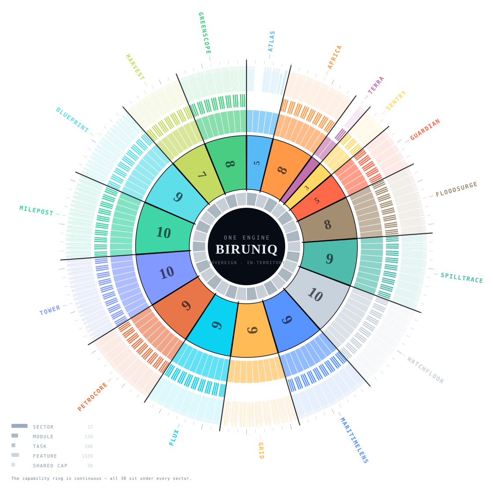
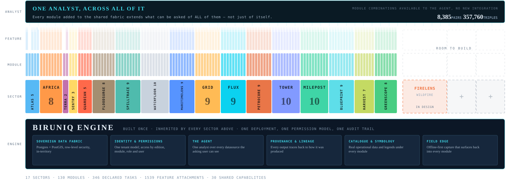

Unlock the evidence. Unlock the answers. Unlock your world.™
BirunIQ is sovereign, agent-native geospatial intelligence. One map, one catalog of layers, one sign-in, so an agency, or many departments, can work from the same picture.
From observation to insight, and from insight to action.
Satellites, sensors, registries and crews in the field already produce more observation than any agency can read. BirunIQ is the layer that turns all of it into decisions an agency can defend, in seventeen industries at once, on one sovereign engine.
Every source, one fabric
SAR, optical, thermal and 98 registered external sources, arriving continuously, plus what crews capture in the field.
One analyst
An agent that reasons across every source the asking user is entitled to see, and nothing more.
The deliverable you're held to
Department modules that produce the record, the report and the decision the agency is actually accountable for.
Counts from the module registry and the source registry, November 2026.
Not a rendering. A running system.
Six minutes inside the product: seventeen editions, the admin console and the field app, every frame captured from the running platform. Sign up below and it unlocks right here.

Sign up to watch the trailer.
Tell us who you are and we'll unlock the six-minute trailer right here, email you the link, and keep you informed as BirunIQ moves toward general availability.

Platform, sector, module, task, feature.
PlatformOne sovereign engine: 30 shared capabilities, one data fabric, one identity, one agent.
Industry editionsA curated catalogue with its own theme, geography and data. All seventeen are live.
Department modulesThe unit a department buys and is held accountable for.
Declared tasksThe use-cases a surface is built to answer. Where a module declares none, the ring shows the gap rather than filling it.
Feature attachmentsAny of the 30 shared capabilities can be cross-added to any module.
Every arc is generated from the engine's own catalogue. Nothing in this diagram is drawn by hand.
A slice, not a fork.
Every edition is the same engine with the departments that industry runs. Nothing was forked; everything compounds. Scroll through the six buyer groups.
Public safety & crisis
Watch named places, score the infrastructure, run the incident.
Defence & maritime
The command picture, and what moves at sea without a signal.
Transport & infrastructure
Airports, roads and bridges, and the projects that build them.
Land & environment
Fields, habitat, groundwater and the evidence on the ground.
In design
FireLens, for wildfire, is named and scoped. It is not built yet, and we say so.
One engine. One analyst. Every sector on it.
One deployment, one permission model, one audit trail, and departments that never shared data sitting on the same fabric. Seventeen courses laid, FireLens in design, room left to build.

One system
One deployment, one identity, one permission tree, one audit trail. Every sector inherits it; nothing above the engine re-implements what the engine already does.
The analyst grows with every module
A module added to the shared fabric extends what can be asked of all of them, not just of itself.
The empty bricks are the point
Each brick is as wide as the departments it ships. The open slots are drawn empty, not filled with names nobody has asked for.
Ask, don't author.
The interface is an analyst, not a toolbar. One agent reasons across every source the asking user can see, and it inherits that user's grants exactly, because its tools are gated by the same checks as the interface.
“Which substations in the flood polygon lost redundancy this week, and what did the SAR pass say?”
Resolves the flood polygon, joins the asset record, runs change detection across modalities, decomposes the confidence, and returns the map, the list and the citation, inside the grants of the person who asked.
The agent's tools are the same functions the interface calls, not scraped screens.
Disable a module and its agent tools disappear with it. There is no back door through the assistant.
Scores break into their components. Confidence is earned only where independent detectors agree.
The model sits behind an abstract interface. No contract names it.
A platform that tells you what it doesn't know.
Every gap is stated on the face of the product instead of hidden behind a number. Lines from the trailer, read off the running product.
Dark vessels. And it says so when it can't tell.
They're proposals. Not titles.
All of it simulated. The screen says so.
An asset that isn't reporting is shown as not reporting.
Sovereign is a property of the code, not the contract.
Runs where you need it
Container-packaged, with its own tenant, its own data and its own identity.
Isolation by row-level security
Tenant and team isolation enforced by Postgres across every tenant table, not a filter in the application.
Resolved in code
Every source carries a licence verdict. Avoid-sources are never offered; view-only sources are server-proxied.
A human accepts the cost
Commercial imagery tasking shows an indicative price before anyone commits.
SaaS
Hosted for you. External data flows only through a gate, and each tenant can switch it off.
Sovereign hybrid
For data that must stay under the customer's own control, with external data still behind the gate.
Air-gap capable
A per-customer build in which no runtime call leaves the boundary, verified on the build before it ships.
In every profile: no telemetry, no licence check, no crash reporter, no font from a CDN. Sovereignty in depth →
The market makes you pick one. We refuse the trade.
Powerful and generic. Becomes a solution only after a long integration programme.
Excellent at one job. The second question needs a second vendor and a second contract.
Fits on delivery day. Improves only when funded again, and never benefits from anything built for anyone else.
Sell inputs, not decisions. Someone still has to build the operating picture.
Agent-native at the interface, enterprise-grade underneath, built for the way public agencies are actually held accountable, and delivered as purpose-built editions.
You are not buying a map. You are buying the rate of change.

Named, scoped, and not built yet.
Stated as not built because it is not built. The platform is built to be audited by someone who wants it to fail.
FireLens
Wildfire, the eighteenth edition: named and scoped, with no code behind it yet.
Calibrated confidence
Confidence bands today are fused from independent detectors. Calibration against held-out data is the next step.
Live ocean forcing
Spill drift forecasts stay labelled simulated until an ocean-forcing feed is connected.
The future of geospatial intelligence is not another map.
It is one sovereign engine that gets better every time anyone asks it a new question.
30 shared capabilities, one data fabric, one identity, one agent, built once and inherited by every edition in the same release.
Seventeen accountable industries and 130 department modules, each a catalogue and a theme on the same engine, none of them a fork.
Provenance that holds, lineage that is recorded, and every gap stated on the face of the product.
The platform that measures the Earth.
Bitruvius, Inc. (“BirunIQ”) sends text messages only to people who have asked to receive them, for replies to enquiries, demo and meeting scheduling, and account and service notifications. You opt in on our contact form by ticking the SMS consent box, which is unticked by default and optional. Message frequency varies, up to 4 messages per month. Message and data rates may apply. Reply STOP to opt out or HELP for help. Mobile numbers and SMS consent are never shared with or sold to third parties or affiliates for marketing purposes. See our SMS Terms, Terms of Service and Privacy Policy.